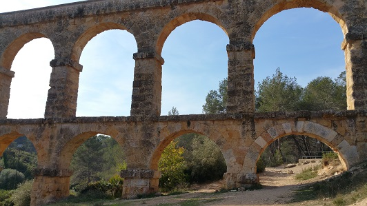
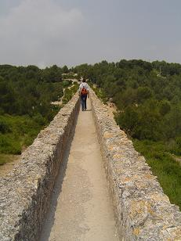
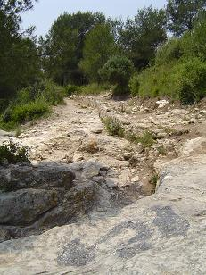

|
|
PUENTE DIABLO
|
|
Tarraco tenias varios acueductos, uno recogía el agua del río Francolí en la actual localidad de Puigdelfí, es decir, a unos 15 km de Tarragona; y el otro la captaba del río Gaiá cerca de Pont de Armentera.
El Acueducto de Les Ferreres más conocido como "El Puente del Diablo", está situado en la margen izquierda del río Francolí, a unos 4 km del núcleo urbano. Se construyó para conducir agua a la ciudad desde los ríos Francolí y Gaiá.
Está construido con sillares de piedra de la zona, unidos en seco sin argamasa. Presenta dos pisos de arcadas superpuestas en seco, con 11 arcos en el piso inferior y 25 en el superior, con una altura máxima de 27 m y un largo de 217 m. Las dimensiones de cada una de estas arcadas son de 6,30 m de luz por 5,70 m de altura. La distancia entre los ejes de los arcos es de 8 m.

Se ha conservado parcialmente el revestimiento original del canal, specus por donde circulaba el agua. En 2011 se restauró la cornisa superior y se recreció el muro superior.
Fue construido en el siglo l a.e.c. bajo el mandato de Augusto. Se utilizó hasta bien entrado el siglo XVIII.
Patrimonio de la Humanidad por la Unesco.
Fotografías antes de su restauración en 2011.
 |
 |
 |
| TORRE ESCIPIONES | EL PRETORIO | VILLA CENTELLES | NECRÓPOLIS | VILLA ELS MUNTS |